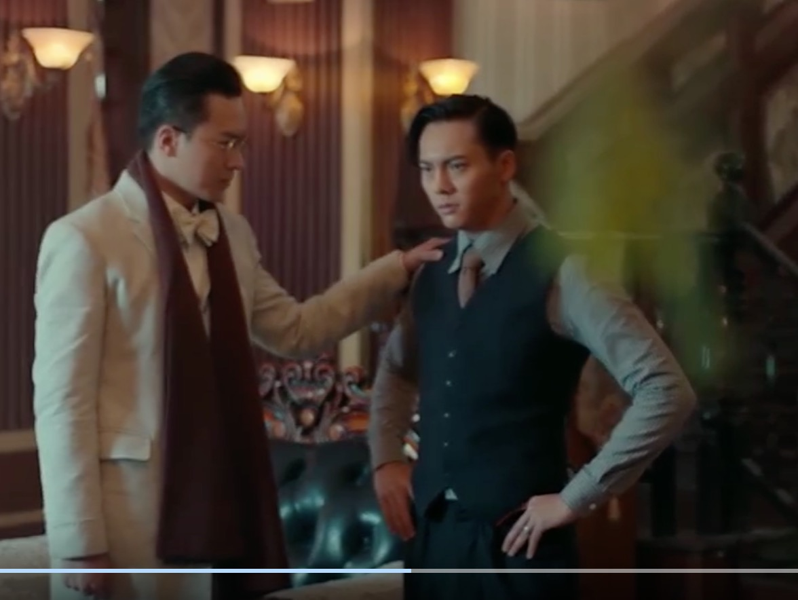

ep1
“他是哪个省来的，让他永远不能离开长沙城”
所以哪个省来的难道不是纯好奇嘛…… 。。。二爷这个丫头有点黑
。。。二爷这个丫头有点黑
ep2
丫头那个面真的xswl
讲真丫头演员可以再找好看一点，哪怕演技烂呢……不然真的不能理解二爷这么完美的男人为什么对她一见钟情
我真不行了
我要给丫头那个面笑死了，二爷你要是被强迫了就眨眨眼
ep3
陈伟霆：这个叫什么，这个叫乱炖是吗（尬笑
我（*%T#%￥……%&……#￥
你是个东北人啊你在说nm呢人张日山都说了我老家也这么吃，你俩不是一家的吗 其实仔细想想张家人都是母么东北人还挺带感
其实仔细想想张家人都是母么东北人还挺带感
八爷真好看，我怀疑他们九门成立的时候除了看倒斗能力声望啥的还要看脸吧，有名有姓的几乎都是好看人，所以我们甚至不知道胖子叫什么
佛爷，睿智（拇指
这日语配音。。
二爷这一身黑好看死了
ep4
你那是孝顺师娘吗，你那是……
这里zyx有点不像他了，好爷们儿（？
看完沙海再回来看这个，张日山的角色形象出入有点大，这里看着不大机敏。。
丫头的戏都好苦啊 抢钱不打我还给他上供吗？？？
抢钱不打我还给他上供吗？？？ ？？？？？还真就给他上供
？？？？？还真就给他上供 嗯？陈皮竟然没有对那个小孩做什么。。我还以为那个小孩会是个骗子啥的被他做掉
嗯？陈皮竟然没有对那个小孩做什么。。我还以为那个小孩会是个骗子啥的被他做掉
ep5
我在做电饭锅蛋糕 打了一集鸡蛋也没发
ep6
这基佬照相我还以为要给二爷来一下子，没想到只是个普通照相 大蛾子我死了 两集了 鸡蛋还是没打发
ep7
//我懒得打发了 直接下锅蒸 蒸的还能吃 还挺好 电饭锅的不知道怎么样了……
这个陆建勋有些低配
八爷这个书生装可爱！
yysy八爷这个颜 能打的
//蛋糕大成功
ep8
我第一次看出演员用替身。。。这一脚飞踹挡脸也太（
zyx这小眼神奶凶奶凶的 呜呜呜呜这是什么玛丽苏好羡慕呜呜呜呜丫头幸福死了
呜呜呜呜这是什么玛丽苏好羡慕呜呜呜呜丫头幸福死了 真希望她能多陪陪二爷啊
我觉得有点（ry
其实可能有别的解决方法，比如跟二爷说你不去我就自己去，你不告诉我你知道的事我必死，让二爷告诉你你自己去呗，丫头都说了祖辈没有一个人活着出来，你还跟人家说要以国为重戴高帽？谁能看着自己爱人去送死呢……到时候就算人真的没出来，丫头会让你偿命还是怎么？你这性命担保在对方也是性命之虞的前提下毫无价值啊，张启山话术一级烂了
桃花说：这是别人羡慕不来的好福气啊
然后丫头的表情看得我好难过……哭
真希望她能多陪陪二爷啊
我觉得有点（ry
其实可能有别的解决方法，比如跟二爷说你不去我就自己去，你不告诉我你知道的事我必死，让二爷告诉你你自己去呗，丫头都说了祖辈没有一个人活着出来，你还跟人家说要以国为重戴高帽？谁能看着自己爱人去送死呢……到时候就算人真的没出来，丫头会让你偿命还是怎么？你这性命担保在对方也是性命之虞的前提下毫无价值啊，张启山话术一级烂了
桃花说：这是别人羡慕不来的好福气啊
然后丫头的表情看得我好难过……哭
啊啊啊亲手手，我的丫头，什么都好 呜呜呜呜呜呜
呜呜呜呜呜呜
说起来我才意识到zyx就是长沙人
ep9
二爷这家伙事儿，看着跟蟹八件似的
 天火同人雷风恒，泽风大过山水蒙，善恶到头谁来报，举头三尺有神明，易经八卦乾坤手，翻云覆雨几多情
？？？？竟然认识二爷的吗
天火同人雷风恒，泽风大过山水蒙，善恶到头谁来报，举头三尺有神明，易经八卦乾坤手，翻云覆雨几多情
？？？？竟然认识二爷的吗
我没有想到二爷出手就是这样一记直拳
艹张启山这出招23333这哪是佛爷这分明是奎爷
ep10
原来赵丽颖演个小花痴，唉，张家人找对象要求真的很奇怪
不要剪啊啊啊啊啊丫头好伤心的！！！！！这才掉几根，我洗澡都比这掉的多多了！！！！急啥！！！！！！
哇老八好谦虚啊
看这个广告的意思陈皮是和陆建勋搞到一起去了？ 其实我感觉老九门的广告还挺好玩的www
东东东东东东东东东东北话呢怎么长沙话，看来小哥英语过硬也不是没道理，老冯高度评价张海杏就是活例子啊（？
其实我感觉老九门的广告还挺好玩的www
东东东东东东东东东东北话呢怎么长沙话，看来小哥英语过硬也不是没道理，老冯高度评价张海杏就是活例子啊（？
ep11
那大睫毛都快刷到眉毛了你竟然真的认不出来啊
ep12
？
你能断人资金链为啥不从拍卖会开始就找九爷呢你早问问九爷是不是家里还能留点东西
hhh小贝勒好可爱
嗨呀这偏心眼子 太坏了
ep13
哈哈哈哈这贝勒爷好可爱啊 山海关外我说了算2333 佛爷：我寻思我也东北的啊23333
这俩女人的友谊来的比男人还要快
？？？？？
等等，可我觉得你更适合我？嗯？佛爷？冷静点？
嗨，小舔狗真可爱，爱了爱了这么可爱我也从了
ep14
软磨硬泡死皮不要脸就可以泡到张家人，我也可以
什么，这已经不是死皮不要脸了，直接喊夫君（
我快看哭了
我比谁都希望这个药有用，可我有我的命，二爷还有很长的路要走
呜呜呜呜呜呜呜呜让她活久一些吧就算我知道二爷寿终正寝活到102岁但还是好难过
ep15
你有病吗把家里搞成这样？
唉，丫头看的真是难过死我了。。怎么会这么可怜啊好心疼她……
原来二爷求药是丫头自己送回去的，我一直都因为那段戏不敢看老九门……误会佛爷了以为是什么儿女情长叽叽歪歪的自私戏码佛爷为了自己老婆不给药之类的，这样的话就好多了不过这种话术你都想的出九爷你是真的狗
ep16
tmd 九爷比佛爷高那么大一块，结果小哥一米八花儿才一米七六（178 对不起我记错了

这集太好哭了，一边吃饭一边哭……不过最后，唉，去你妈的尹新月，自私自利，佛爷有事的时候对人家呼来喝去，jb大个东西真当自己能看佛面仗人势了 而且二爷这段放纵戏真恶心，比失恋了去酒吧那种还恶心，人设都毁了 // 唉最近疫情，就经常躺在异国他乡胡思乱想，偶尔想到我老公/我真的确诊了怎么办，再看这段戏，我哭疯
ep17
这开头把尹新月的自私自利又刁蛮的嘴脸又给我复习了一遍，翘脚跟二爷说教：我尹新月瞧不起你
你算什么jb 还特意强调了一句，佛爷白白挨了你一剑，我寻思舔狗也要遵守基本法不是，佛爷病死了二爷不给你药你不杀他？而且yysy二爷是嫖娼还是干啥管你鸡毛事好吃好喝伺候你死了老婆还要听你骂娘，地头蛇基本法可不该惯你北平大小姐
//
你们九门人真jb怪，在自己家祖坟打盗洞……还有尹新月真的是不知天高地厚的恋爱脑了，她本身不那么菜的话，其实我并不讨厌
还特意强调了一句，佛爷白白挨了你一剑，我寻思舔狗也要遵守基本法不是，佛爷病死了二爷不给你药你不杀他？而且yysy二爷是嫖娼还是干啥管你鸡毛事好吃好喝伺候你死了老婆还要听你骂娘，地头蛇基本法可不该惯你北平大小姐
//
你们九门人真jb怪，在自己家祖坟打盗洞……还有尹新月真的是不知天高地厚的恋爱脑了，她本身不那么菜的话，其实我并不讨厌
ep18
 裘德考到底是德国人还是美国人啊
然后那个日本人长的真的很怪
裘德考到底是德国人还是美国人啊
然后那个日本人长的真的很怪
ep19
你妈的，这大蛾子给我看死了
有跟我一样的鳞翅目恐惧症患者，直接跳到19分半，这玩意我真看不了 哈哈哈哈哈这陆建勋真是，满世界丢人，还骚2333搞笑担当了
哈哈哈哈哈这陆建勋真是，满世界丢人，还骚2333搞笑担当了
ep20
佛爷，吃饼干吗
我挺奇怪一路不管遇到啥危险都非得带着老八干嘛。。他不是都没法自保吗
佛爷面瘫看的审美疲劳
ep21
佛爷，吃饼干吗
我挺奇怪一路不管遇到啥危险都非得带着老八干嘛。。他不是都没法自保吗
佛爷面瘫看的审美疲劳
ep22
佛爷，吃饼干吗
我挺奇怪一路不管遇到啥危险都非得带着老八干嘛。。他不是都没法自保吗
佛爷面瘫看的审美疲劳
在场就你一个女的，哥几个都没提美人计这事，你自己不觉味儿吗
ep23
天呐八爷对家丁好好啊我也想被八爷叫傻孩子（x
这广告我吐了小皮皮小陆陆，怎么这玩意都能出cp的
ep24
啥玩意，这张家人怎么长的参差不齐的，我以为大家都很好看呢 “这头发肯定是趁你不注意钻进去的”
废话，我要是瞅着它我能眼瞅它钻我吗
“这头发肯定是趁你不注意钻进去的”
废话，我要是瞅着它我能眼瞅它钻我吗
二爷这得带多少弹珠，感觉身上穿的备不住是十年里坎肩的那种装设备马甲（不
或者坎肩是个改良了的红家传人（不
而且说起来用这种高速子弹/弹珠探路，胖子就用过一次，最后是用犀照破的鬼打墙，唉构思有点匮乏哦
角色们这家国抱负忠肝义胆的看上去怪怪的……我看个挖坟，又不是学习墙囯，唉
ep25
 这嫁女儿也太随意了，你起码看看女婿长啥样啊？？？？？？？？？
我滴妈，张铭恩这两句喊话
“一定要给我注意安全”
这表情，这语气
可千万别演霸总，绝对灾难级
这嫁女儿也太随意了，你起码看看女婿长啥样啊？？？？？？？？？
我滴妈，张铭恩这两句喊话
“一定要给我注意安全”
这表情，这语气
可千万别演霸总，绝对灾难级
九爷身边这个是谁啊，九爷咋啥都跟她说的明明白白，难道是观众吗
ep26
你这退烧药进嘴人就醒了？？？要是跟这医生还有啥说不明白的细节描写我可就杀了编剧
。。。。佛爷拔枪吓我一跳 抓绿色溜达鸡都没抓二爷这么容易，开玩笑呢？？？这放火影海贼里就是tm原创回
下了个矿是什么大事啊。。。唉
莫名其妙，狗屁不通没看原作就对了
抓绿色溜达鸡都没抓二爷这么容易，开玩笑呢？？？这放火影海贼里就是tm原创回
下了个矿是什么大事啊。。。唉
莫名其妙，狗屁不通没看原作就对了
剧情突然智商掉线 唉
ep27
“佛爷就没一枪毙了他”
“二爷他被关了这么久，时间拖的越久就越危险balabalabala”
这和人问你的有啥关系啊
唉，她真叫霍锦惜啊，名字听玛丽苏，我心思是同人自己编的呢
这tm的剧情需要有点过分了……人均菜逼了
ep28
陈皮真是欺师灭祖 唉
尹新月好起来了
ep29
xswl 派霍锦惜色诱二月红……谁色诱谁啊
这东鹏太硬了
。。。。。。。。打水这个校园霸凌戏码我真qnmd 什么弱智
我好像在小张哥那个故事里看过类似的场面呢 但是不管怎么说，没走几步就大土司大护法的，有点sb
ep30
怎么的凭什么就跟人大土司有关系啊……
这集结尾有一段zyx拍雨中求药的花絮
ep31
.....就非得没完没了的给年轻帅鳏夫安排艳遇是吧
目前全剧最弱智就是这个大土司了吧
唉这个大土司能不能别把啥心理活动都说出来啊，你回去杀不杀管人家啥事啊，还他们一定没想到我能活到现在，几分钟之前还差点死了明明你自己也没想到吧
分分钟无能狂怒，一惊一乍
？？？
“先回白桥从长计议”
“没错，黑桥再凶险也比不过我白桥的内斗”这女人真是顶级理解，是不是其实不怎么会说也听不太懂汉人说话
顺便二爷这套红的真难看哦
ep32
。。。。。。什么狗屁白乔寨这段到底是什么睿智剧本啊，妥妥的傻逼女人不会写女性角色就少写点吧，一个赛一个的贱
“她算什么聪明人”你也有脸说这话
ep33
？？？？佛爷竟然去过蝎子墓吗？？？？分家也配？？？？？那不是和小哥同龄人了
哦，不是内斗，我傻了
？？？？？？？？？？？找东北老家就不能问问张副官？？？？？？？？？？？？？？？？干啥呢在这？？？？？？？？？？？？？？？？？？
“我以为你知道啊。”
行
ep34
逻辑越来越完蛋了
晚上
我们两个
方便
ep35
开始二倍速了
ep36
这个辣鸡心魔的设定怎么还没完事，怎么不去写哈利波特呢
ep37
这回忆杀老太太裹脚布
//
有些人可能就是更适合无限月读的世界呢有些日漫套路了，说真的，佛爷你就是个挖坟的，你懂个屁的二月红，目前为止后期节奏透着一股精神火影TV粉的气质
//
这个套娃戏也太拙劣了。。还有陈皮遇到丫头之前那段打戏……尬
ep38
……
跟我俩拉尔斯和真实女孩呢
这无限月读戏怎么能写的这么难看
一群“为了你好”的道德绑架老妈子，你们自己想走就走啊，磨磨唧唧絮絮叨叨
ep39
屎
裘德考这个角色真的算了吧 这哪是外国人，这是天龙人
ep40
。。这陈皮小时候的戏越描越黑啊从小就那么小人得志
ep41
这在莫名其妙的地方安排反派内心戏，堪比东京食尸鬼屑死了屑死了
不是说用一句理智全失就能完全不顾逻辑……希望各位创作者能够明白
ep42
唉 八爷真是全剧观感担当 前后起码人设能保持一致
这个霍家长辈好像和那个日本女的一个cv呢
霍仙姑辈分这么小？？？竟然比其他的九门老辈小一辈
ep43
这个大夫是不是三叔。。。
这莫医生这几个问题问的，绝了，盲狙三杀
另外尹新月为什么明知道二爷不会找别的女人还非得给人家往一块凑啊啥年代连鳏夫都看不过眼吗
民国时候竟然分级诊疗？？？
张日山比佛爷可爱太多x
不看沙海他也还是可爱
ep44
尹新月：我知道他忘不了丫头，但我想让他和我表妹在一起
你表妹都他妈快死了你还替她惦记老爷们
ep45
这东鹏特饮绝了 所以这他妈日本人的阴毛和矿山到底有球关系
害，二爷求你妹来的吗还扣上帽子了
糙 迷惑二爷
ep46
。。
这对麦高芬的追求真的你起码自圆其说啊，目前为止陨铜真的在日本人手里0作用好吧你不瞎起哄跟着找这玩意长沙还没这么乱
。。。。。。
无话可说
ep47
？？？你自己给人放了然后再撒丫子出来追
唉 炼制病毒。。唉
……
倒数第二集了，还在这不紧不慢看得我好丧啊。。如果是追连载的话可能看到30多就弃了
“孽障，今天为师就要清理门户！”
为什么不告诉他簪子的事——“丫头一直关心陈皮，我想这可能也是丫头的意思。”
啊？
死可以死，但不能让他内疚？啊？
？？？七步之内必有解药说的不是……草啥的吗，你这？人？围着人长解药呗？
ep48
他们打麻将竟然带三娘不带老狗？她不都卸任了吗？
前面还说齐家只送算……这就一字一个铜板了
唉真的八爷我觉得你就别上了。。